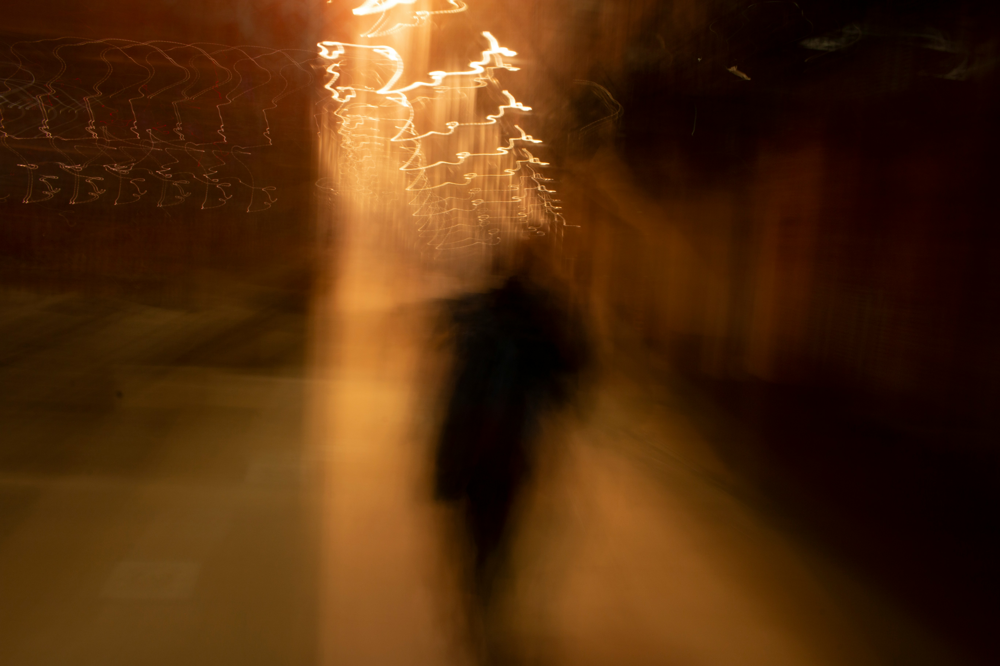
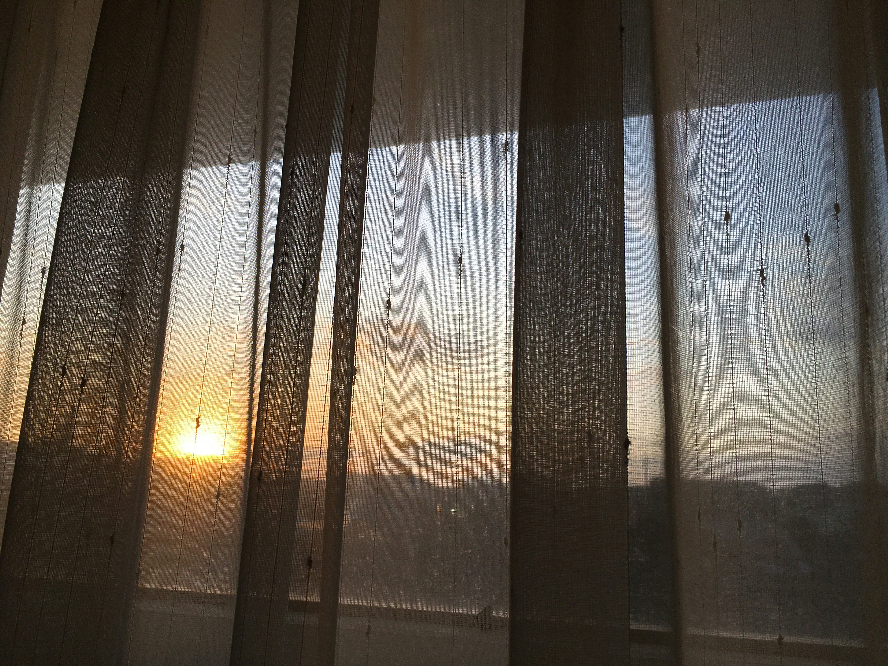

Gallery
This gallery presents photographs created as part of the My Light, My Night photovoice initiative. Images reflect participants’ perspectives and lived experiences.


Neurodiversity through Photography in Research and Education


This gallery presents photographs created as part of the My Light, My Night photovoice initiative. Images reflect participants’ perspectives and lived experiences.

